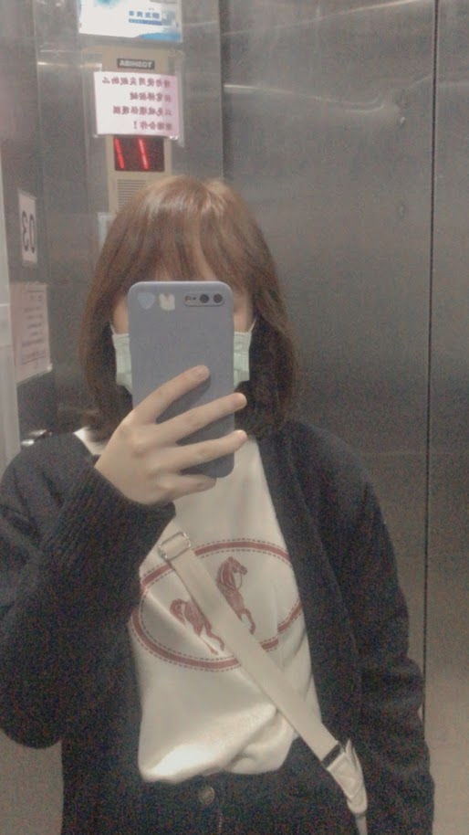
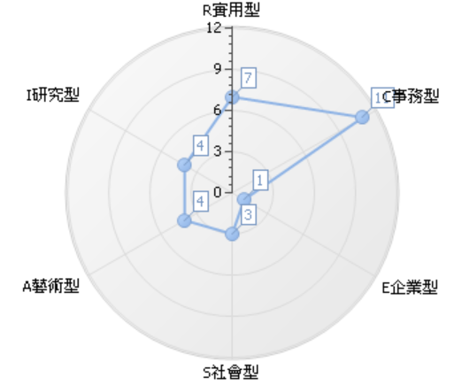

就讀靜宜大學資訊管理學系
喜歡按部就班的行事，樂於處理資料、計算及文書，
寧願實際動手作而不喜歡多言，比較喜歡獨立做事，
避免主觀性、學術性、富想像力或人際互動的工作類型。

我的職業性格主要為C事務型、R實用型
我對事務型、實用型的職業興趣相較於對其他類型的興趣有明顯的區分，
也就是說，我對事務型、實用型的職業興趣很明顯地高於其他類型。
在條件需求中有【需發掘客戶端資訊問題並提供相關解決方案】
符合事務型在問題解決策略上，會選擇跟隨既定的法則、常規和程序行事，
仰仗權威的建議和諮詢、尋求實用的解決方案，能夠制定有次序且仔細的計畫解決問題。